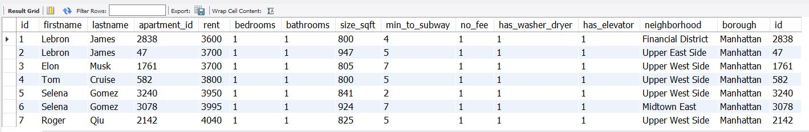

Hi, welcome to my SQL demo! Here I will use MySQL to turn raw data into useful information for Airbnb property
purchasers, then we will create and display a mock Airbnb database. All SQL code, python scripts and files are available at the link here.
Here's how this will be done:
1. Obtain an existing dataset with details on New York City
apartments including monthly rent prices
2. Query the dataset so that only useful columns are selected, sorted and displayed with Excel
3. Fit the queried dataset into a Python multiple linear regression model for users to find optimal prices
4. Create a new dataset of fake owners who have now purchased some properties
5. Create a new dataset of fake guests who will look to book some apartments
6. Finally, create a new datasets of fake bookings to link guests with apartments and owners
7. Display the entity relationship diagram (ERD) of the Airbnb database using MySQL Workbench
-
To begin, we acquire a fake dataset on apartments in New York City. This set was aqcuired from Codecademy and contains around 3500 apartments:
-
MySQL Workbench is then used to create a new database called Airbnb. The 3500 apartments is then imported to this database as the "apartments" table with an added primary key:
-
There are certain features of these apartments we want and others we don't care for so we use SQL to filter out the columns as well as rows to only display ones that are of interest to us. The new list is just 126 apartments and 11 rows:
-
To assist in the analysis of optimal apartments to purchase, we will this new dataset into a simple machine learning model called Multiple Linear-Regression using Python code. The SKlearn library allows us to create the machine learning analysis, Pandas helps manage the dataframe and Matplotlib allows us to create the visualizations. As we can see from the graphs below, sqft makes the larges differences in prices, bathrooms and bedrooms less so and minutes:

-
Lastly we now use the regression algorithm to find the average price of an apartment in manhattan with 1 bedroom, 1 bathroom and 800 sqft. The result is $4205 a month. When buying apartments that match these criteries, we will now know to look for prices lower than this amount:
-
Going back to MySQL, lets now finish our database. First we create a dataset of fake owners who now have purchased some properties and we use a foreign key to link owners to the apartments table. We use a left join on the owners table to the apartments table so we can see in detail the apartments that these owners have:

-
Then we create a dataset of fake guests who will be looking to book some of these apartments:
-
In order to link these guests with the rest of teh database, well need to create our final 'bookings' table which will contain the apartment that they booked and the time of their reservation. After, we link that with our owners to see a view of which owners can expect guests, at which apartment and when. This time we use an inner join so we only see apartments that are booked:
-
We have completed our mock Airbnb database, here is the enhanced entity-relationship diagram of our database: